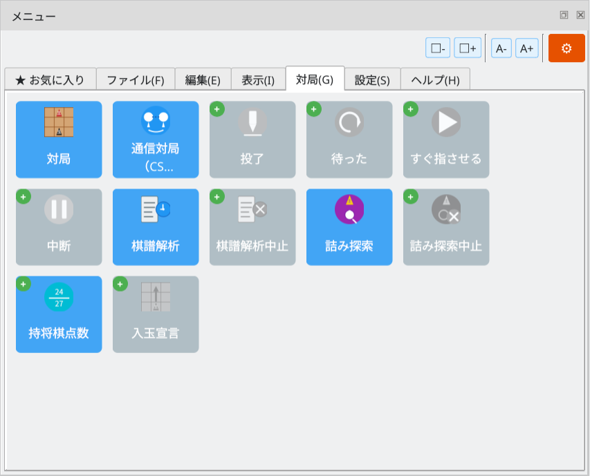
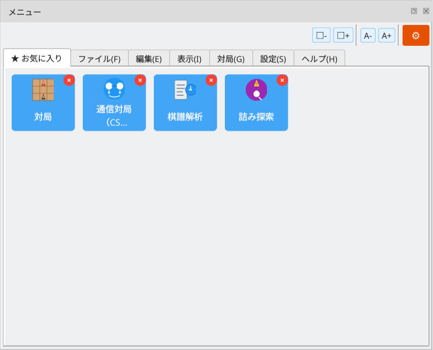
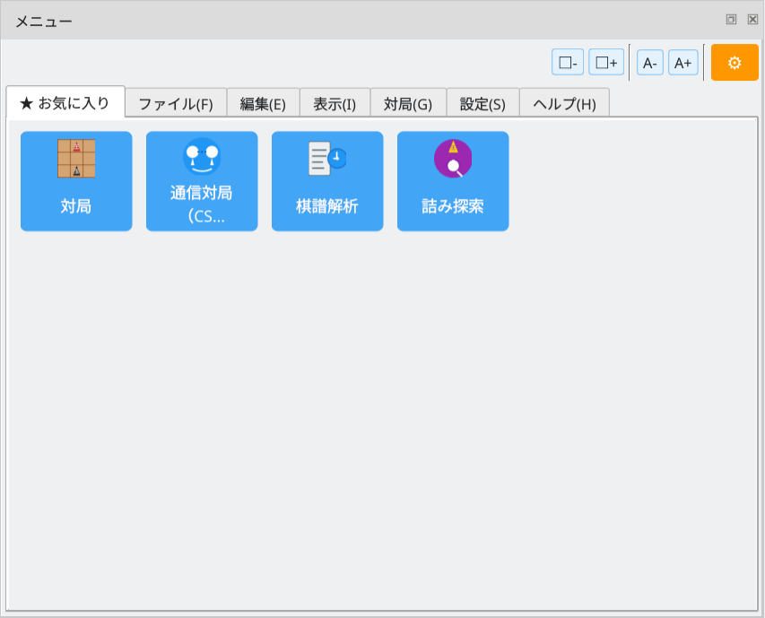

Access commands quickly from the menu dock
Screenshots show the Japanese interface unless otherwise noted.
Add frequently used commands to Favorites for quick access
The ★ Favorites tab displays your saved favorite commands. It is empty until you add some.
Favorites tab: initial state with no saved commands
Click the gear button (⚙) at the top right to enter favorites editing mode. A green + appears at the top left of each command button in the menu tabs. Click it to add the command to Favorites.

Customize mode: click + to add a favorite
Open the Favorites tab while in customize mode to see a red × on saved commands. Click × to remove a favorite. When you are finished, click the gear button (⚙) again to leave customize mode.

Edit favorites: click × to remove an item
Your saved commands appear together in the ★ Favorites tab, so you can access them quickly without switching tabs.

Favorites ready: saved commands displayed in the Favorites tab